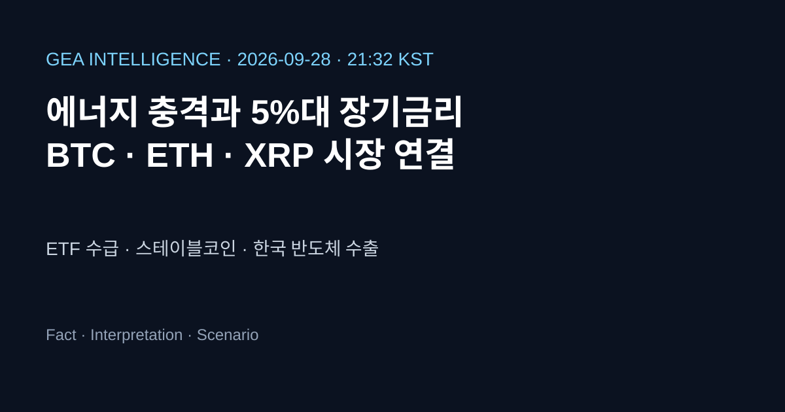

Crypto Intelligence
미국 ETF 수급과 스테이블코인 인프라, BTC·ETH·XRP 시장의 다음 조건

시장 스냅샷
| 자산 | USD | KRW | 24시간 | 거래량 | 시가총액 |
|---|---|---|---|---|---|
| BTC #1 | $83,295 | ₩113,265,059 | -1.95% | $34.09B | $1.67T |
| ETH #2 | $2,678 | ₩3,641,266 | -1.34% | $13.77B | $326.88B |
| XRP #5 | $1.52 | ₩2,062 | -1.54% | $3.45B | $95.36B |
CoinGecko 공개 API 2026-09-28 21:32 KST 관측값. BTC·ETH·XRP 각각 49개 포인트의 최근 24시간 시계열을 저장했습니다. 페이지는 실시간 API를 먼저 시도하고 실패하면 저장 데이터로 대체합니다.
오늘의 종합 분석
Fact
BTC $83,295, ETH $2,677.78, XRP $1.52로 세 자산 모두 24시간 하락했습니다. 전체 시장은 약 $2.85T, BTC 점유율은 58.57%입니다.
Interpretation
미 국채 장기금리와 에너지 충격은 위험자산 할인율을 높이는 반면, ETF와 스테이블코인 인프라 확대는 시장 접근성과 결제·정산 구조를 바꾸는 중기 변수입니다.
Scenario
금리·달러·유가가 안정되고 ETF 순유입이 지속되면 대형 자산 중심 수요가 유지될 수 있습니다. 반대로 금리·유가 동반 상승, ETF 환매, 수탁 사고가 겹치면 레버리지 축소와 변동성 확대를 확인해야 합니다.
이슈 1: BTC ETF 수급의 회복 신호와 검증 과제
Fact
9월 25일까지의 공개 집계에 따르면 미국 현물 BTC ETF의 주간 순유입이 크게 늘어 2026년 누적 흐름이 플러스로 전환됐다는 보도가 나왔습니다. 다만 집계 기관에 따라 주간 합계는 약 $2.3B~$2.4B 등 차이가 있습니다.
Interpretation
규제된 래퍼를 통한 기관 접근성은 수요 기반을 넓힐 수 있지만, 며칠간의 집중 유입만으로 지속적인 현물 수요나 가격 방향을 확정할 수 없습니다. ETF 흐름, 현물 거래량, 국채금리를 함께 확인해야 합니다.
Scenario
순유입이 여러 주 이어지고 장기금리가 안정되면 유동성의 질이 개선될 수 있습니다. 반대로 유입이 빠르게 유출로 전환되면 레버리지 청산과 함께 단기 변동성이 커질 수 있습니다.
이슈 2: 스테이블코인이 거래 수단에서 금융 레일로 이동
Fact
9월 공개 자료는 USDT와 USDC가 여전히 시장을 크게 양분하는 가운데 USDC, RLUSD, USD1 등도 유통·기관 인프라를 확장하고 있다고 정리합니다. 준비자산, 상환, 발행자 규제와 유통망이 핵심 경쟁요소로 부상했습니다.
Interpretation
스테이블코인 시가총액 증가 자체보다 결제·국경 간 정산·기관 재무관리에서 실제 사용되는지가 시장구조에 더 중요합니다. 발행자와 거래소·은행의 연결은 유동성을 높일 수 있지만 집중·준비자산·운영 리스크도 함께 커집니다.
Scenario
규제된 발행과 유통망이 확대되면 거래소 밖 결제와 토큰화 자산의 결제 레일로 쓰일 수 있습니다. 반대로 준비자산 투명성이나 상환 신뢰가 흔들리면 시장 전체의 유동성 프리미엄이 높아질 수 있습니다.
거시 변수와 암호화폐 연결
정책금리와 10년물 수익률이 높으면 무수익 자산의 기회비용과 레버리지 비용이 커집니다.
강달러는 글로벌 유동성을 조이고, 원화 약세는 국내 투자자의 원화 환산 가격과 수입물가를 바꿉니다.
ETF는 접근성을 높이지만 주식·채권과 같은 포트폴리오 위험축소가 발생할 때 환매 통로가 될 수 있습니다.
유가 상승은 물가와 금리를 통해 위험자산에 부담을 주고, 금은 지정학적 방어 수요와 금리 부담이 충돌합니다.
관련 글: 오늘의 경제 브리핑 · 디지털 자산 리스크 · 누적 데이터